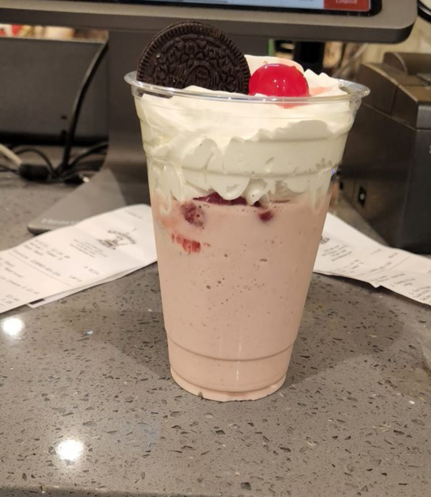

Seniores strawberry shake recipe

A simple, easy, and delicious recipe to make a classic strawberry shake.
Working the graveyard shift at a pizzeria, (or anywhere!) can be very boring and depressing.
But with a delicious shake like this it made the nights go by that much quicker and put a smile on my face every time!
You can make it yourself at home using the recipe below! (Though I warn you I don't think it will taste as good as drinking it on those late nights of work.)
Ingredients
- Oreo cookie's
- Strawberries (preferably frozen to get the right consistency in your shake)
- Vanilla ice cream
- Maraschino cherries
- Whip cream
- Milk
Instructions
- First you want to combine your strawberries, ice cream, and milk into a blender and blend until consistency is thick but not runny
- Next you will pour your blended ingredients into a cup of your choice
- Then you will apply a generous helping of whip cream onto your shake
- lastly you decorate your shake with as many cherries and oreos as you like!
There you have it, now you can confidently say you know how to make one of the best strawberry shakes ever!
Go back to main page